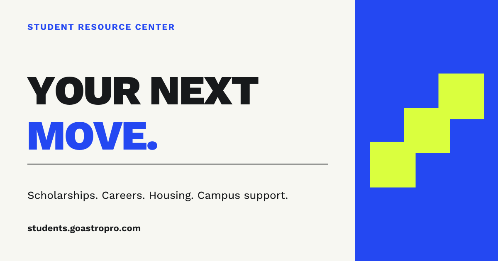

Your next move.
A simple invitation to explore what comes next.
Student Resource Center / Brand identity
Big plans. Real resources.
A brand built to help students move
forward.
An independent student-facing identity.
A project by AstroPro.
01 / Logo system
Three connected steps turn a small start into forward motion. Simple enough for a browser tab. Bold enough for the whole brand.
Keep at least one step’s width clear on every side. Use the full lockup at 180 px wide or larger; below that, use the symbol. Keep the symbol at least 20 px wide.
Use the supplied proportions and colors. Keep backgrounds simple. Use the white version on dark photography. Avoid shadows, gradients, stretching, rotation, or outlines.
Lead with Student Resource Center. “A project by AstroPro” is a small endorsement in supporting material, separate from the main logo.
02 / Color
Paper and Ink carry the reading. Move Blue carries the brand. Signal Lime creates a moment of emphasis.
Use white on Move Blue, Ink on Signal Lime, and Ink on Paper for readable text. Use lime as a fill or accent rather than small text on white. Category tints support navigation; they do not replace the primary palette.
03 / Typography
Sora / Display & headings
Big plans.
Start here.
Work Sans / Body, interface & logo lettering
Find a scholarship. Explore a career. Find your place. Clear words and useful links help you take the next step.
Use Sora 700–800 for short headlines and Work Sans 400–650 for reading and controls. Keep small interface text at 12 px or larger and phone inputs at 16 px. Both fonts are included under their SIL Open Font Licenses.
04 / Voice & message
Encouraging, direct, and practical. Speak to students as capable people. Make the action clear and the expectations honest.
A simple invitation to explore what comes next.
Start with a useful verb. Name the destination.
Say what the service does. Avoid guaranteed awards, invented urgency, or promises of admission, housing, and employment.
05 / Ready to use
Use the cover for campaigns, the square avatar for profiles, and the transparent logo files for presentations and email headers.
